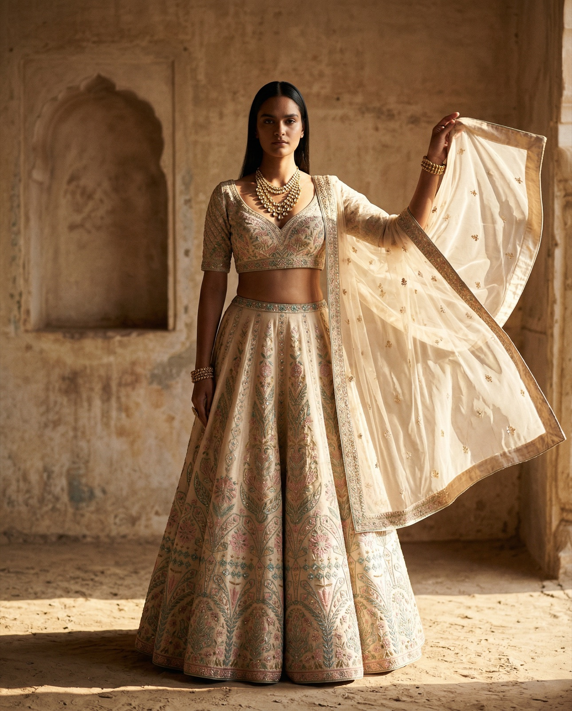

Spec work across automotive, spirits, apparel, and lifestyle — built to show what happens when production doesn't sit in a queue for six weeks. This is the shape of 100 videos a month.
A spec spot series pitched for a modern Porsche campaign. Cinematic camera moves, sculptural light, and the kind of pacing that belongs in a 30-second broadcast cut — shipped at the speed a performance brand actually needs for weekly iteration.
Three angles on the same machine: open road, tight curve, and the still frame that holds it all together. Built for paid social placement — 9:16 native, but cut to scale across Meta, YouTube, and OOH.
A four-cut product film exploring the ritual — wax, glass, amber, ice. Each shot holds long enough to feel the tactility, short enough to earn the scroll. Built for the moments between sip and sell.
A trio of outdoor performance pieces — including a spec crossover concept for Shady Rays × Arc'teryx. Motion that earns its place on athlete-grade feeds: mud, terrain, weather, and product working together.
A spec beverage concept: the world blurs, the product stays still. One of the simplest ways to make a drink feel like a moment. One video, one idea, shot and shipped fast.
A cinematic bridal lehenga film paired with six editorial stills. Heritage couture sized, cut, and paced for the feed — built to stop the thumb on Meta and hold it on Instagram. See the full campaign →

Editorial Still